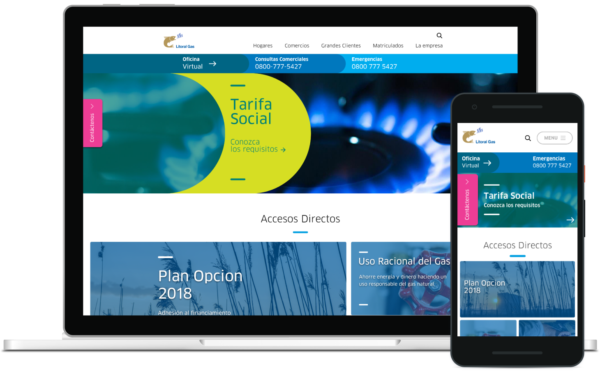
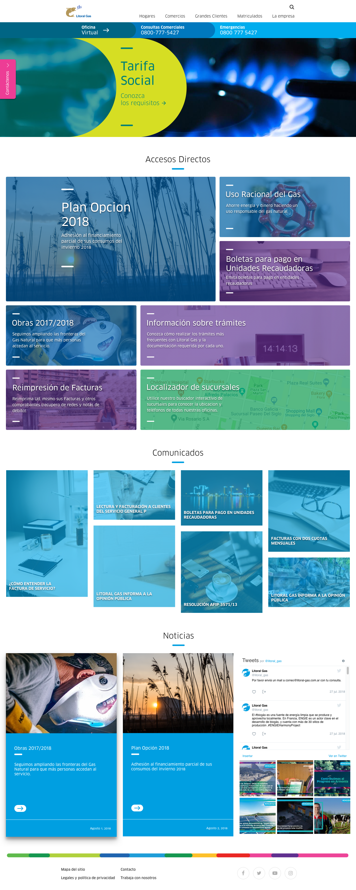
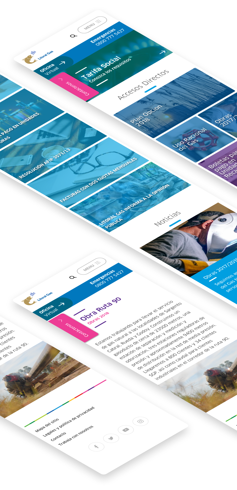
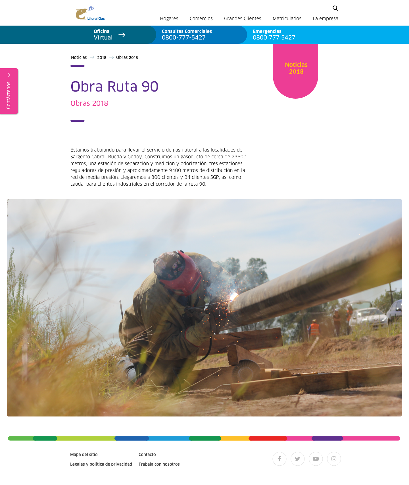
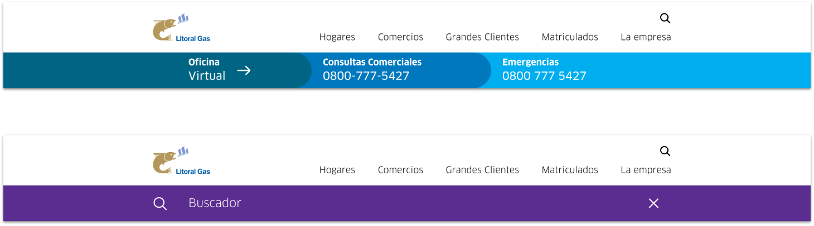
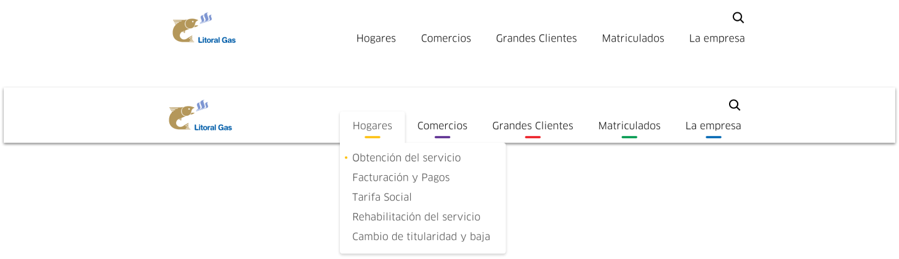

Litoral Gas S.A. have the concession of natural gas distribution in Santa Fe and northeast of Buenos Aires. Since 2015 was merged with the energy giant ENGIE, the starting point of this project was to integrate both brands identities. It should be dynamic and simple, maintaining the components and functionality of their current page.

After planning meetings and reading a lot of documentation about Litoral Gas & ENGIE branding, I proposed a Homepage that merges the two companies and pushes Litoral Gas to the present day.
A lot of information has to be shown by requirement on the Homepage: Contact phone numbers, a masonry grid with Articles, an announcements section and the news & social media feed.


Besides the Homepage, I created an article page, flexible enough to put any kind of information in it.

The phone number bar also saves space for the search bar when the loupe icon is clicked.

Also, a very silly but powerful feature is that the sections were color-coded. This gives the user a little hint where they are and also helps the sections to be more easily identified in the navigation of the site.

A short (only 4 iterations) and fulfilling project, in which I had the opportunity to work on a national and renowned company from my hometown, Rosario.